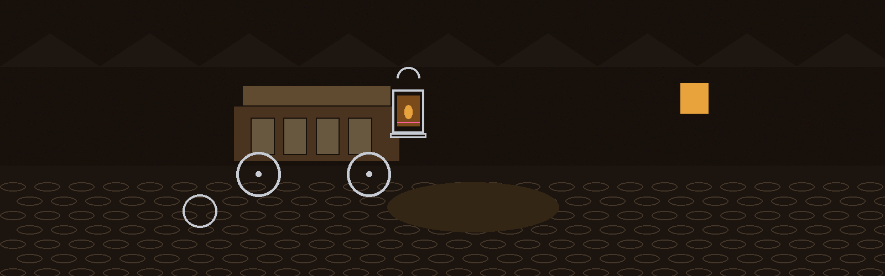
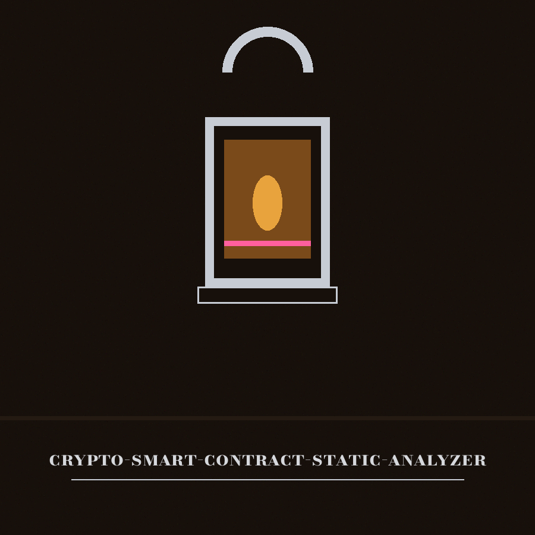
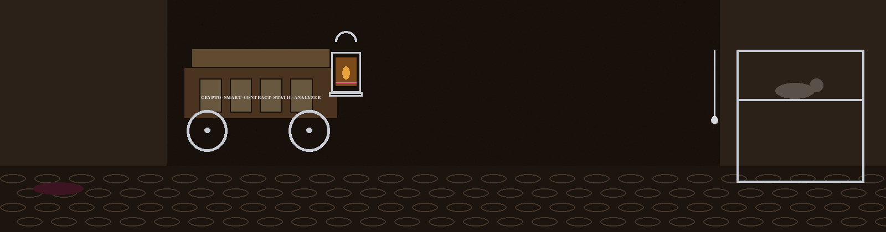

crypto-smart-contract-static-analyzer: The Night Soil Cart and Other Honest Hours
Theme: The Night Soil Cart and Other Honest Hours. Headings in Bodoni Moda SC, reading text in Archivo.



Seven Checks, in Round Order
A Comment Stops the Round Too
The Report Empties Before It Fills
The Contract Is Never the Report
Seven Checks, in Round Order
One contract file comes in as plain text. Seven checks walk it in a fixed order. First, tx.origin, flagged for phishing risk. Second, block.timestamp, flagged for timestamp dependence. Third, the literal word unchecked, flagged for arithmetic outside the usual overflow guard. Fourth, low level external calls in three spellings, .call{ and .call.value( and .call(, flagged with the reentrancy caution attached. Fifth, delegatecall, flagged for what delegating to untrusted code can do to storage. Sixth, one exact weak randomness string joining a block difficulty term and a block timestamp term inside a keccak256 call, in that order, with that spacing. Seventh, an informational note, not a warning, when msg.data and keccak256 both appear anywhere in the file. The boundary stands on the same page: nothing is parsed, no control flow is built, no safety is proved, no exploit is proved.
A Comment Stops the Round Too
Matching is substring matching on raw text. A listed phrase inside a comment stops the round exactly as the same phrase in live code does. A listed phrase inside a string literal does the same. A pattern written with different spacing or a different argument order walks past unseen. A clean report means the seven strings were absent. It means that, and it does not mean the contract is free of the faults the strings point at.
The Report Empties Before It Fills
The report file is emptied at the start of each run, before findings are entered. Findings are logged to the console and appended to the report as [WARNING] or [INFO] lines during the run, each line opened, written, and closed on its own, so a failure partway leaves a report holding every line up to the failure. One refusal guards the whole entry: where the resolved output path is the input file itself, by relative spelling or by symlink as much as by direct naming, the tool prints an error and exits 1 before writing anything, and the contract is left unchanged.
Endings
A missing input file prints Error: File not found: followed by the path, and exits 1. An input file that cannot be read exits 1. A refused output path exits 1. An analysis that fails partway, through an output path that cannot be opened, exits 1 with its partial report left standing. A finished round exits 0, whether its report holds six warnings, one warning, or none beyond its closing information lines.
Licence
The README licence line is shown as printed in the record below and flagged here in place: it names the organisation in an unhyphenated form. The separate LICENSE file holds the MIT License. The two stand side by side, unreconciled, as they stand in the repo.
Code Facts Restored from the Code
A listed phrase inside a comment stops the round exactly as the same phrase in live code does, and a listed phrase inside a string literal does the same.
The weak randomness check is exact in argument order and spacing: the same fault written with swapped arguments or an extra space passes unseen.
The report file is emptied at the start of each run, before findings are entered.
A failure partway through a round leaves the partial report standing, each line having been opened, written, and closed on its own, and that failure exits 1.
A finished round exits 0, whether its report holds warnings or none.
The Preserved Record
# crypto-smart-contract-static-analyzer
A small pattern matching static analyzer for smart contract source files. It reads one contract file as text and reports a short list of known risky patterns. It does not build a control flow graph, parse Solidity, or prove that a contract is safe or exploitable.
## Checks performed
- `tx.origin` usage (phishing risk)
- `block.timestamp` usage (timestamp dependence)
- The literal word `unchecked` (arithmetic that opts out of Solidity 0.8 overflow checks)
- Low level external calls: `.call{`, `.call.value(`, `.call(` (a reentrancy relevant pattern if state is updated after the call)
- `delegatecall` usage
- Weak randomness pattern `keccak256(block.difficulty, block.timestamp)`
- Informational note when `msg.data` and `keccak256` both appear
## Requirements
- Python 3.10 or later
- No third party packages. The tool uses only the Python standard library, so `requirements.txt` is intentionally empty.
## Install
```bash
git clone https://github.com/ShadowGuard-AI/crypto-smart-contract-static-analyzer.git
cd crypto-smart-contract-static-analyzer
```
## Usage
```
python3 main.py [-h] [--output OUTPUT] [--verbose] contract_code
```
- `contract_code`: path to the contract source or text file to scan (required)
- `--output OUTPUT`, `-o OUTPUT`: report file. Default: `analysis_report.txt`. The file is overwritten at the start of each run. The output path must not be the contract file itself: if the resolved output path is the same file as the input, including a relative spelling of the same path or a symlink to it, the tool prints an error and exits 1 before writing anything, so the contract source is left unchanged.
- `--verbose`, `-v`: set logging to debug level
- `-h`: show help and exit
Findings are logged to the console and appended to the report file as `[WARNING]` or `[INFO]` lines during that run.
## Examples
```bash
python3 main.py contract.sol
python3 main.py contract.sol --output analysis.txt
python3 main.py contract.sol -v
```
For a contract containing `tx.origin` and `block.timestamp`, the report contains:
```
[WARNING] Potential tx.origin usage detected. This can be vulnerable to phishing attacks.
[WARNING] Potential timestamp dependence detected. This can be manipulated by miners.
[INFO] Performing basic vulnerability checks...
[INFO] Analysis completed.
```
A missing input file prints `Error: File not found: <path>` and exits with status 1.
## Limitations
- Pure substring pattern matching on the file text. It does not understand Solidity syntax, bytecode, data flow, or whether state changes happen before or after an external call, so it cannot confirm true reentrancy or integer overflow.
- A clean report only means none of the listed patterns were found.
## License
Copyright (c) ShadowGuardAI
## Diagrams and maps
I drew the tool out in [crypto-smart-contract-static-analyzer-Visuals](crypto-smart-contract-static-analyzer-Visuals/): an architecture diagram, a data-flow diagram, a flowchart of a scan, and a product map, with the written product map, statistics with citations, and the roadmap in [VISUAL.md](crypto-smart-contract-static-analyzer-Visuals/VISUAL.md). Every sheet also ships as a PNG photograph of the paper page beside its SVG.